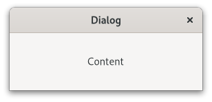

Gtk.Dialog¶
Example¶

Methods¶
- Inherited:
Gtk.Window (64), Gtk.Widget (183), GObject.Object (37), Gtk.Accessible (18), Gtk.Buildable (1), Gtk.Native (6), Gtk.Root (3)
- Structs:
class |
|
|
|
|
|
|
|
|
|
|
|
|
|
|
|
|
Virtual Methods¶
- Inherited:
Gtk.Window (5), Gtk.Widget (25), GObject.Object (7), Gtk.Accessible (7), Gtk.Buildable (9), Gtk.ShortcutManager (2)
|
|
|
Properties¶
- Inherited:
Name |
Type |
Flags |
Short Description |
|---|---|---|---|
r/w/co |
|
Signals¶
- Inherited:
Name |
Short Description |
|---|---|
Emitted when the user uses a keybinding to close the dialog. |
|
Emitted when an action widget is clicked. |
Fields¶
- Inherited:
Name |
Type |
Access |
Description |
|---|---|---|---|
parent_instance |
r |
Class Details¶
- class Gtk.Dialog(*args, **kwargs)¶
- Bases:
- Abstract:
No
- Structure:
Dialogs are a convenient way to prompt the user for a small amount of input.
<picture> <source srcset=”dialog-dark.png” media=”(prefers-color-scheme: dark)”> <img alt=”An example
Gtk.Dialog" src=”dialog.png”> </picture>Typical uses are to display a message, ask a question, or anything else that does not require extensive effort on the user’s part.
The main area of a
GtkDialogis called the “content area”, and is yours to populate with widgets such aGtkLabelorGtkEntry, to present your information, questions, or tasks to the user.In addition, dialogs allow you to add “action widgets”. Most commonly, action widgets are buttons. Depending on the platform, action widgets may be presented in the header bar at the top of the window, or at the bottom of the window. To add action widgets, create your
GtkDialogusing [ctor`Gtk`.Dialog.new_with_buttons], or use [method`Gtk`.Dialog.add_button], [method`Gtk`.Dialog.add_buttons], or [method`Gtk`.Dialog.add_action_widget].GtkDialogsuses some heuristics to decide whether to add a close button to the window decorations. If any of the action buttons use the response IDGtk.ResponseType.CLOSEorGtk.ResponseType.CANCEL, the close button is omitted.Clicking a button that was added as an action widget will emit the [signal`Gtk`.Dialog::response] signal with a response ID that you specified. GTK will never assign a meaning to positive response IDs; these are entirely user-defined. But for convenience, you can use the response IDs in the [enum`Gtk`.ResponseType] enumeration (these all have values less than zero). If a dialog receives a delete event, the [signal`Gtk`.Dialog::response] signal will be emitted with the
Gtk.ResponseType.DELETE_EVENTresponse ID.Dialogs are created with a call to [ctor`Gtk`.Dialog.new] or [ctor`Gtk`.Dialog.new_with_buttons]. The latter is recommended; it allows you to set the dialog title, some convenient flags, and add buttons.
A “modal” dialog (that is, one which freezes the rest of the application from user input), can be created by calling [method`Gtk`.Window.set_modal] on the dialog. When using [ctor`Gtk`.Dialog.new_with_buttons], you can also pass the
Gtk.DialogFlags.MODALflag to make a dialog modal.For the simple dialog in the following example, a [class`Gtk`.MessageDialog] would save some effort. But you’d need to create the dialog contents manually if you had more than a simple message in the dialog.
An example for simple
GtkDialogusage:```c // Function to open a dialog box with a message void quick_message (
Gtk.Window*parent,str*message) {Gtk.Widget*dialog, *label, *content_area;Gtk.DialogFlagsflags;// Create the widgets flags =
Gtk.DialogFlags.DESTROY_WITH_PARENT; dialog = gtk_dialog_new_with_buttons (“Message”, parent, flags, _(”_OK”),Gtk.ResponseType.NONE,None); content_area =Gtk.Dialog.get_content_area(GTK_DIALOG (dialog)); label =Gtk.Label.new(message);// Ensure that the dialog box is destroyed when the user responds
g_signal_connect_swapped (dialog, “response”, G_CALLBACK (
Gtk.Window.destroy), dialog);// Add the label, and show everything we’ve added
Gtk.Box.append(GTK_BOX (content_area), label);Gtk.Widget.show(dialog); } ```The
GtkDialogimplementation of theGtkBuildableinterface exposes the content_area as an internal child with the name “content_area”.GtkDialogsupports a custom<action-widgets>element, which can contain multiple<action-widget>elements. The “response” attribute specifies a numeric response, and the content of the element is the id of widget (which should be a child of the dialogs action_area). To mark a response as default, set the “default” attribute of the<action-widget>element to true.GtkDialogsupports adding action widgets by specifying “action” as the “type” attribute of a<child>element. The widget will be added either to the action area or the headerbar of the dialog, depending on the “use-header-bar” property. The response id has to be associated with the action widget using the<action-widgets>element.An example of a
GtkDialogUI definition fragment:``xml <object class=”GtkDialog” id=”dialog1”>
- <child type=”action”>
<object class=”GtkButton” id=”button_cancel”/>
</child> <child type=”action”>
<object class=”GtkButton” id=”button_ok”> </object>
</child> <action-widgets>
<action-widget response=”cancel”>button_cancel</action-widget> <action-widget response=”ok” default=”true”>button_ok</action-widget>
</action-widgets>
</object> ``
- Accessibility
GtkDialoguses theGtk.AccessibleRole.DIALOGrole.Deprecated since version 4.10: Use [class`Gtk`.Window] instead
- classmethod new()[source]¶
- Returns:
the new dialog as a
GtkWidget- Return type:
Creates a new dialog box.
Widgets should not be packed into the
GtkWindowdirectly, but into the content_area and action_area, as described above.Deprecated since version 4.10: Use [class`Gtk`.Window] instead
- add_action_widget(child, response_id)[source]¶
- Parameters:
child (
Gtk.Widget) – an activatable widgetresponse_id (
int) – response ID for child
Adds an activatable widget to the action area of a
GtkDialog.GTK connects a signal handler that will emit the [signal`Gtk`.Dialog::response] signal on the dialog when the widget is activated. The widget is appended to the end of the dialog’s action area.
If you want to add a non-activatable widget, simply pack it into the action_area field of the
GtkDialogstruct.Deprecated since version 4.10: Use [class`Gtk`.Window] instead
- add_button(button_text, response_id)[source]¶
- Parameters:
- Returns:
the
GtkButtonwidget that was added- Return type:
Adds a button with the given text.
GTK arranges things so that clicking the button will emit the [signal`Gtk`.Dialog::response] signal with the given response_id. The button is appended to the end of the dialog’s action area. The button widget is returned, but usually you don’t need it.
Deprecated since version 4.10: Use [class`Gtk`.Window] instead
- add_buttons(*args)[source]¶
The add_buttons() method adds several buttons to the Gtk.Dialog using the button data passed as arguments to the method. This method is the same as calling the Gtk.Dialog.add_button() repeatedly. The button data pairs - button text (or stock ID) and a response ID integer are passed individually. For example:
dialog.add_buttons(Gtk.STOCK_OPEN, 42, "Close", Gtk.ResponseType.CLOSE)
will add “Open” and “Close” buttons to dialog.
Deprecated since version 4.10: Use [class`Gtk`.Window] instead
- get_content_area()[source]¶
- Returns:
the content area
GtkBox.- Return type:
Returns the content area of self.
Deprecated since version 4.10: Use [class`Gtk`.Window] instead
- get_header_bar()[source]¶
- Returns:
the header bar
- Return type:
Returns the header bar of self.
Note that the headerbar is only used by the dialog if the [property`Gtk`.Dialog:use-header-bar] property is
True.Deprecated since version 4.10: Use [class`Gtk`.Window] instead
- get_response_for_widget(widget)[source]¶
- Parameters:
widget (
Gtk.Widget) – a widget in the action area of self- Returns:
the response id of widget, or
Gtk.ResponseType.NONEif widget doesn’t have a response id set.- Return type:
Gets the response id of a widget in the action area of a dialog.
Deprecated since version 4.10: Use [class`Gtk`.Window] instead
- get_widget_for_response(response_id)[source]¶
- Parameters:
response_id (
int) – the response ID used by the self widget- Returns:
the widget button that uses the given response_id
- Return type:
Gtk.WidgetorNone
Gets the widget button that uses the given response ID in the action area of a dialog.
Deprecated since version 4.10: Use [class`Gtk`.Window] instead
- response(response_id)[source]¶
- Parameters:
response_id (
int) – response ID
Emits the
::responsesignal with the given response ID.Used to indicate that the user has responded to the dialog in some way.
Deprecated since version 4.10: Use [class`Gtk`.Window] instead
- set_default_response(response_id)[source]¶
- Parameters:
response_id (
int) – a response ID
Sets the default widget for the dialog based on the response ID.
Pressing “Enter” normally activates the default widget.
Deprecated since version 4.10: Use [class`Gtk`.Window] instead
- set_response_sensitive(response_id, setting)[source]¶
-
A convenient way to sensitize/desensitize dialog buttons.
Calls
gtk_widget_set_sensitive (widget, @setting)for each widget in the dialog’s action area with the given response_id.Deprecated since version 4.10: Use [class`Gtk`.Window] instead
- do_close() virtual¶
Signal emitted when the user uses a keybinding to close the dialog.
- do_response(response_id) virtual¶
- Parameters:
response_id (
int) – response ID
Emits the
::responsesignal with the given response ID.Used to indicate that the user has responded to the dialog in some way.
Deprecated since version 4.10: Use [class`Gtk`.Window] instead
Signal Details¶
- Gtk.Dialog.signals.close(dialog)¶
- Signal Name:
close- Flags:
- Parameters:
dialog (
Gtk.Dialog) – The object which received the signal
Emitted when the user uses a keybinding to close the dialog.
This is a keybinding signal.
The default binding for this signal is the Escape key.
Deprecated since version 4.10: Use [class`Gtk`.Window] instead
- Gtk.Dialog.signals.response(dialog, response_id)¶
- Signal Name:
response- Flags:
- Parameters:
dialog (
Gtk.Dialog) – The object which received the signalresponse_id (
int) – the response ID
Emitted when an action widget is clicked.
The signal is also emitted when the dialog receives a delete event, and when [method`Gtk`.Dialog.response] is called. On a delete event, the response ID is
Gtk.ResponseType.DELETE_EVENT. Otherwise, it depends on which action widget was clicked.Deprecated since version 4.10: Use [class`Gtk`.Window] instead
Property Details¶
- Gtk.Dialog.props.use_header_bar¶
- Name:
use-header-bar- Type:
- Default Value:
-1- Flags:
Trueif the dialog uses a headerbar for action buttons instead of the action-area.For technical reasons, this property is declared as an integer property, but you should only set it to
TrueorFalse.- Creating a dialog with headerbar
Builtin
GtkDialogsubclasses such as [class`Gtk`.ColorChooserDialog] set this property according to platform conventions (using the [property`Gtk`.Settings:gtk-dialogs-use-header] setting).Here is how you can achieve the same:
``c g_object_get (settings, “gtk-dialogs-use-header”, &header, NULL); dialog = g_object_new (GTK_TYPE_DIALOG, header, TRUE, NULL); ``
Deprecated since version 4.10: Use [class`Gtk`.Window] instead